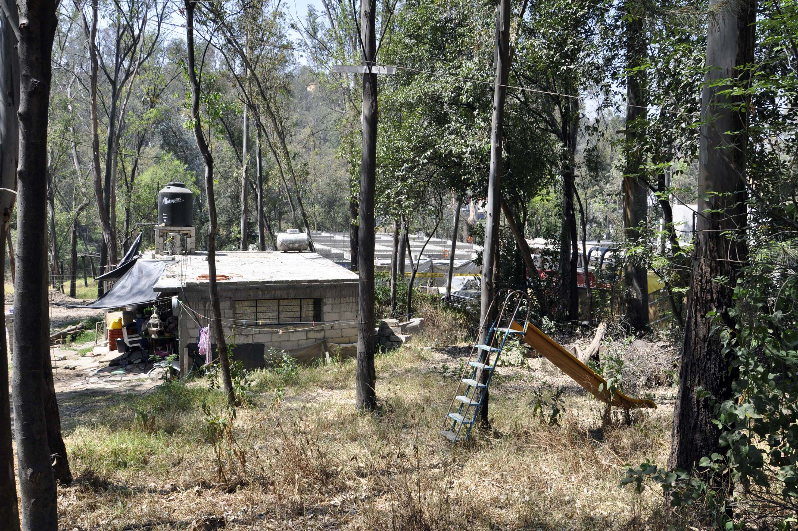
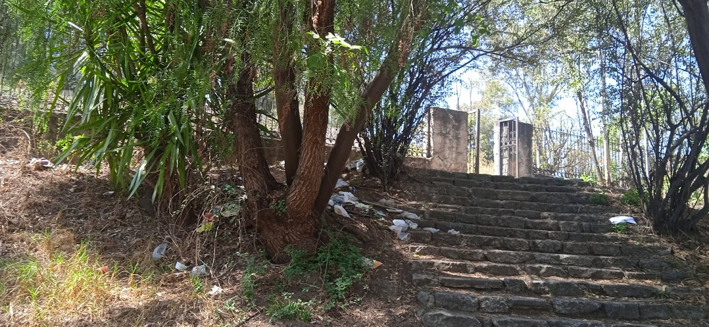

Actualmente, se considera como reserva natural, sin embargo, de las 400 hectáreas que correspondían al bosque, ahora solo restan menos del 20%, por supuesto se debe a ciertas problemáticas como:
- Invasiones: estas van desde construcciones legales e ilegales, excavaciones, hasta arrojo de cascajo, mismas que invaden el derecho de vía de la zona federal de las torres de alta tensión de la Comisión Federal de Electricidad.
- Incendios provocados: estos incendios son causados por distintas personas, desde las que irrumpen con el fin de desaparecer la flora del parque y seguir construyendo, hasta políticos y grandes empresas que desde años atrás han puesto en su mira a las hectáreas con fines lucrativos.

- Falta de programa de conservación y manejo: debido a la omisión y corrupción de distintos gobiernos municipales, estatales y federales, han dado pauta a la pérdida de las hectáreas que han provocado el enojo en todos aquellos que eran los dueños originarios, que ahora están luchando por la conservación del parque.
- Tala de árboles indiscriminadamente: Como todo lo anterior, la tala de árboles ha provocado una gran disminución de la flora y fauna del parque, para ser reemplazadas por casas o grandes inmobiliarios.

Página Principal
|